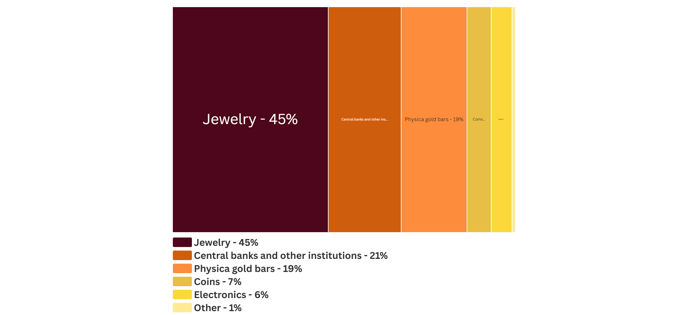

Gold is a transition metal that occurs naturally as small grains of pure metal within larger minerals called 'lodes'. A lode commonly occurs in the bedrock of North America. Elemental gold can also occur as an alloy with silver and copper. One of the most common gold alloys is called electrum. Gold may also occur in lesser amounts within complex sulfide minerals called pyrite, more commonly known as "fool's gold".[1][2][3]

Where was gold discovered?
Gold was first smelted in ancient Egypt as far back as 3600 BC for metal work and currency. Gold coins first appeared in Türkiye in 600 BC. Gold was a steadfast backer of global currencies up until 1971, after US President Richard Nixon delinked gold from global currencies. [4][5]
Screenshot via Google Earth
What is gold used for?
What industries use gold?
Data from USGS National Minerals Information Center 2025
How much gold has been mined?
Cumulative Gold Mined by Country in Metric Tons
Data From British Geological Survey (1913-2019)

How is gold mined?
Goldmines LLC Nevada, USA
Nevada has gold deposits all across the state. Many paleozoic gold deposits occur in Nevada, the driest state in the United States. The Carlin gold deposit was discovered in 1907 by the Newmont Mining Corporation. The deposit is comprised mainly of pyrite in sedimentary rocks.
Today, the deposit is overseen by Nevada Goldmines LLC, Elko, Nevada. This group was formed in 2019 after Barrick (62%) and Newmont Corporation (38%) merged. Gold-containing ore, namely pyrite, is mined from four major complexes located in this high desert region: Carlin, Cortez, Phoenix, and Turquoise Ridge. There is a total of 10 open-pit mines, 9 underground operations, 8 heap leach facilities, 3 oxide plants, 1 flotation plant, 2 autoclave facilities, and 2 roaster facilities. In 2024, their operations contributed $2.9 billion to the Nevada economy. [3-13]